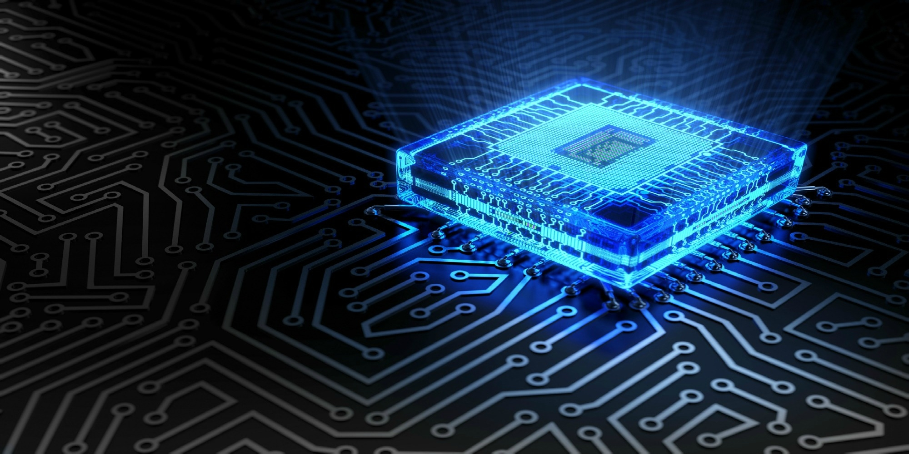
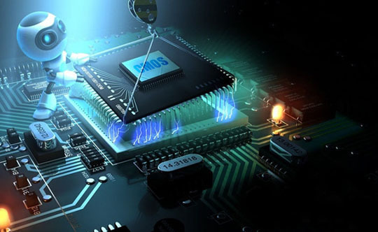
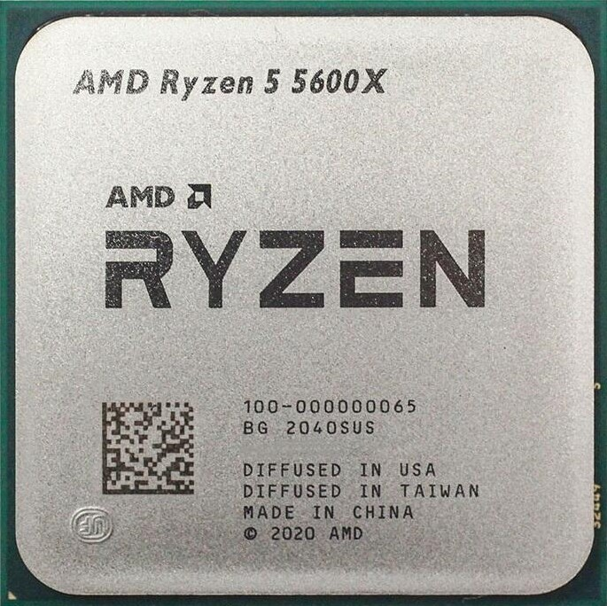
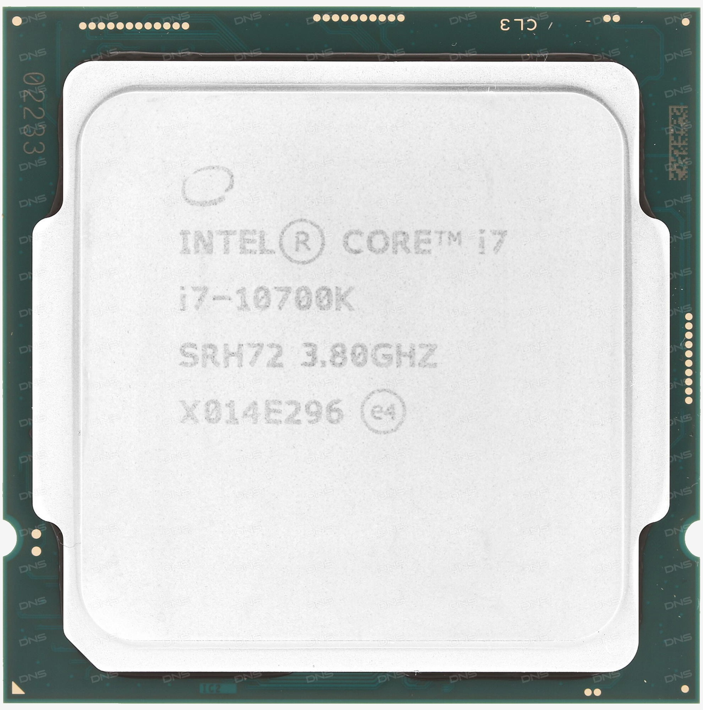
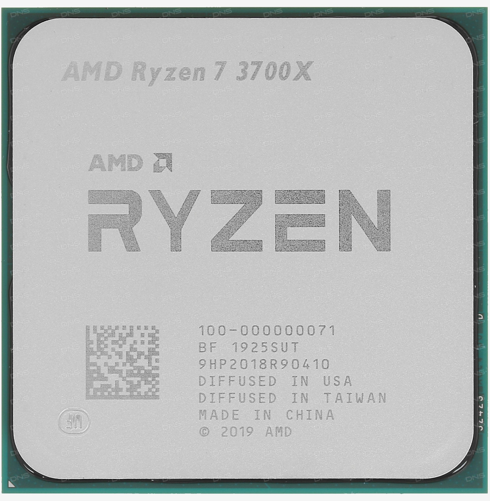
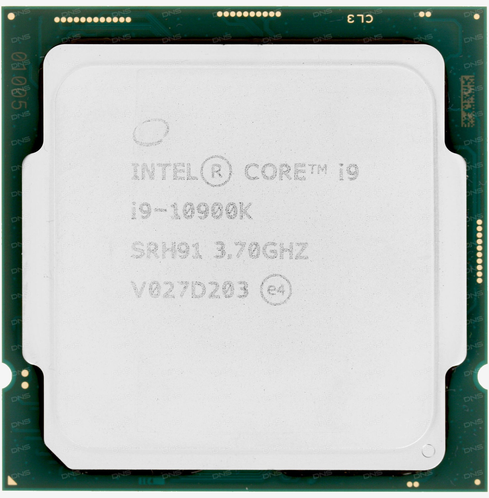
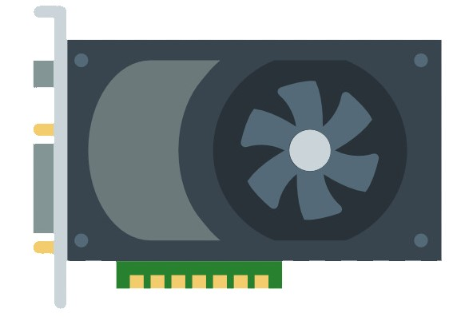

Привет, покупатель
- Лучшие цены!
- Быстрая доставка!
- Никакого брака!
- Протестировано перед отправкой!


Что такое центральный процессор?
Вероятно, выбирая компьютер и изучая его характеристики вы заметили, что такому пункту как процессор придают большое значение. Почему именно ему, а не модели материнской платы, блока питания, или видеокарты? Да, это тоже важные компоненты системы и от их правильного подбора также многое зависит, однако характеристики ЦП напрямую и в большей степени влияют на скорость и производительность ПК. Именно поэтому мы работаем над тем, чтобы каждый мог найти для процессор для своего будущего компьютера.
АКТУАЛЬНЫЕ ПРЕДЛОЖЕНИЯ

AMD RYZEN 5600
Используйте лучшее оборудование для игр, 6 невероятных ядер, для тех, кто живет игрой. Этот лучший в мире процессор для настольных ПК гарантирует прекрасную производительность в играх.
Высокопроизводительная архитектура ядер «Zen 3» компании AMD позволяет процессорам Ryzen 5 5600X, развивать более высокую производительность в одно- и многопотоковом режимах, чем любой другой процессор для настольных ПК. Эта необходимая для успеха геймеров и разработчиков контента производительность помогает побеждать.

Intel Core i7-10700K
Процессор Intel Core i7-10700K – чип со сбалансированной производительностью. Можно использовать его для создания различных сборок. При изготовлении применялся технологический процесс 14 нм. Он позволяет добиться небольшого потребления энергии и тепловыделения. Процессор выполнен с применением архитектуры Comet Lake. Она позволила поднять производительность в сравнении с чипами прошлого поколения. Используется восемь ядер и шестнадцать потоков для обработки информации.

AMD Ryzen 7 3700X BOX
8-ядерный процессор AMD Ryzen 7 3700X BOX – вычислительное устройство экстра-класса, рассчитанное на работу в составе игровой системы. Объем кеш-памяти третьего уровня – 32 МБ. Базовая частота процессора – 3600 МГц. Максимальная частота в режиме турбо – 4400 МГц.
Процессор AMD Ryzen 7 3700X BOX характеризуется невысоким тепловыделением: показатель TDP устройства равен 65 Вт. В комплектацию модели входит фирменный кулер. Встроенное графическое ядро отсутствует. Тип совместимой с процессором памяти – DDR4

Процессор Intel Core i9-10900K
Intel Core i9-10900K - верхняя планка линейки процессоров 10го поколения представленных в прошлом году компанией.Это десятиядерный монстр с максимальной частотой до 5.3 ГГц, который, благодаря технологии Hyper Threading поддерживает 20 потоков. Новое поколение Comet Lake-S производится по 14-нанометровому техпроцессу. Графика Gen9.5, представленная видеоядром UHD Graphics 630.
ДРУГИЕ ТОВАРЫ
Домашняя страница

Здесь вы узнаете не только главную информацию о нашей компании, но и много другого интересного
Главная страница
ВИДЕОКАРТЫ

Здесь мы поможем выбрать подходящую именно вам видеокарту и расскажем несколько интересных фактов о них
Видеокарты
ОПЕРАТИВНАЯ ПАМЯТЬ

Здесь мы поможем выбрать подходящую вам оперативную память для вашего ПК и расскажем несколько интересных фактов о ней
Оперативная память